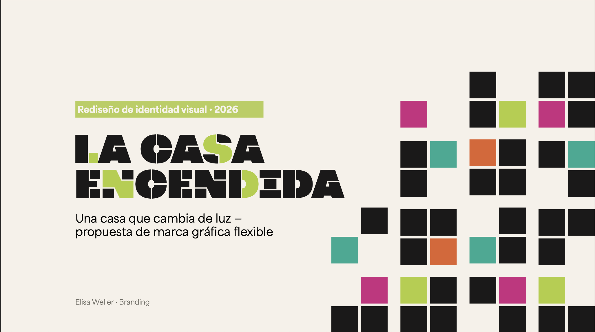
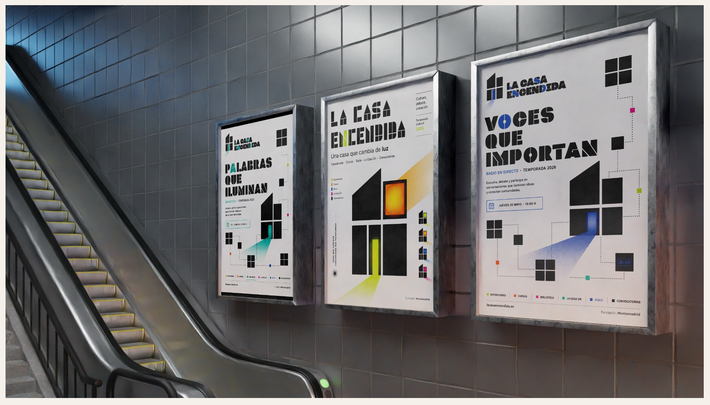
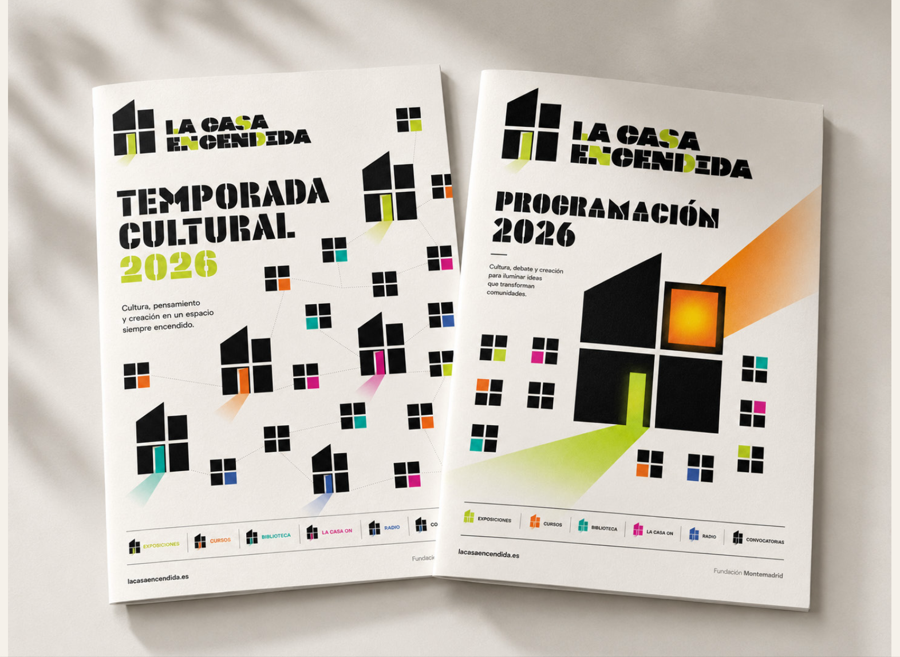
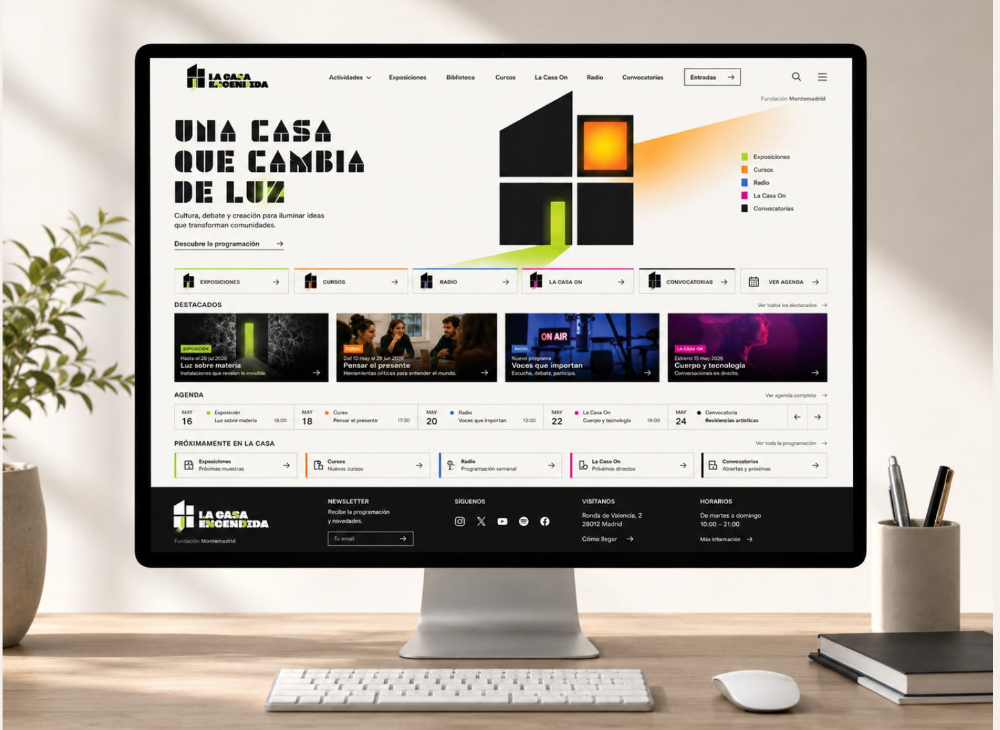
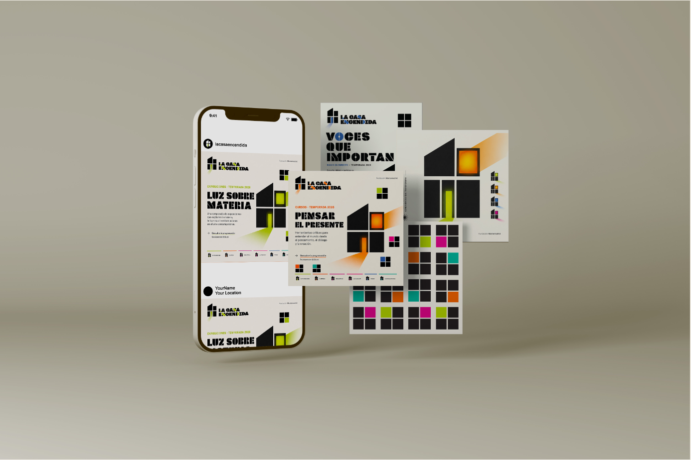
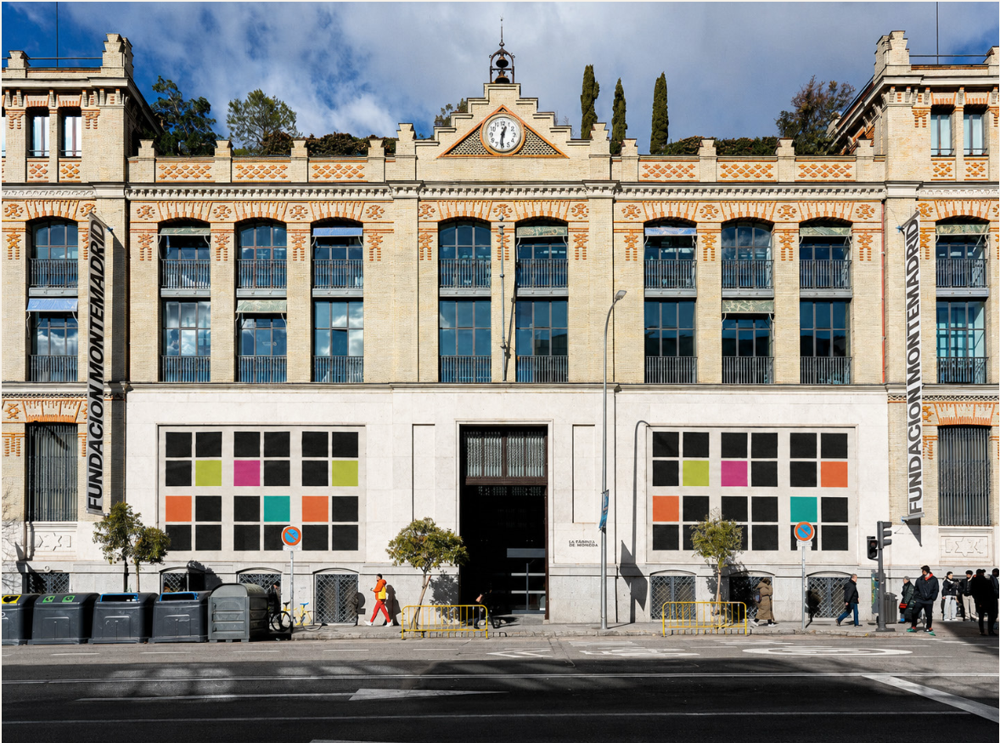

Branding · Identidad visual
La Casa Encendida
Una propuesta de identidad gráfica flexible inspirada en una casa que permanece viva porque sus espacios se iluminan constantemente con nuevas ideas, actividades y encuentros.

Contexto
El proyecto consiste en desarrollar una nueva identidad visual para La Casa Encendida, un centro cultural con una programación diversa y cambiante.
El reto era crear una marca reconocible que pudiera adaptarse a distintas áreas, actividades y soportes sin perder coherencia.
Proceso
La identidad parte de una estructura modular formada por ventanas, habitaciones y puertas. Cada módulo puede iluminarse con un color diferente según la categoría representada.
La estructura principal permanece constante, mientras que el color y la composición cambian para generar un sistema visual dinámico y flexible.
Resultado
El resultado es una identidad gráfica adaptable que mantiene una imagen reconocible en carteles, folletos, publicaciones digitales y diferentes aplicaciones de marca.
Galería





Ficha técnica
- Disciplina
- Branding e identidad visual
- Contexto
- Proyecto académico individual
- Año
- 2026